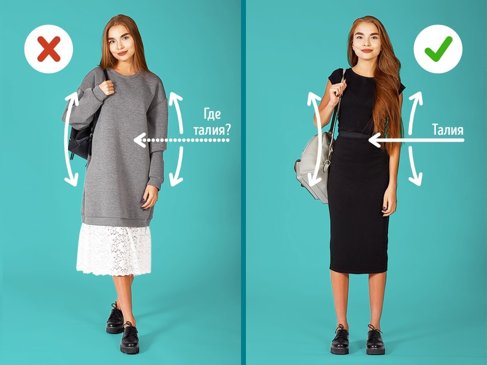
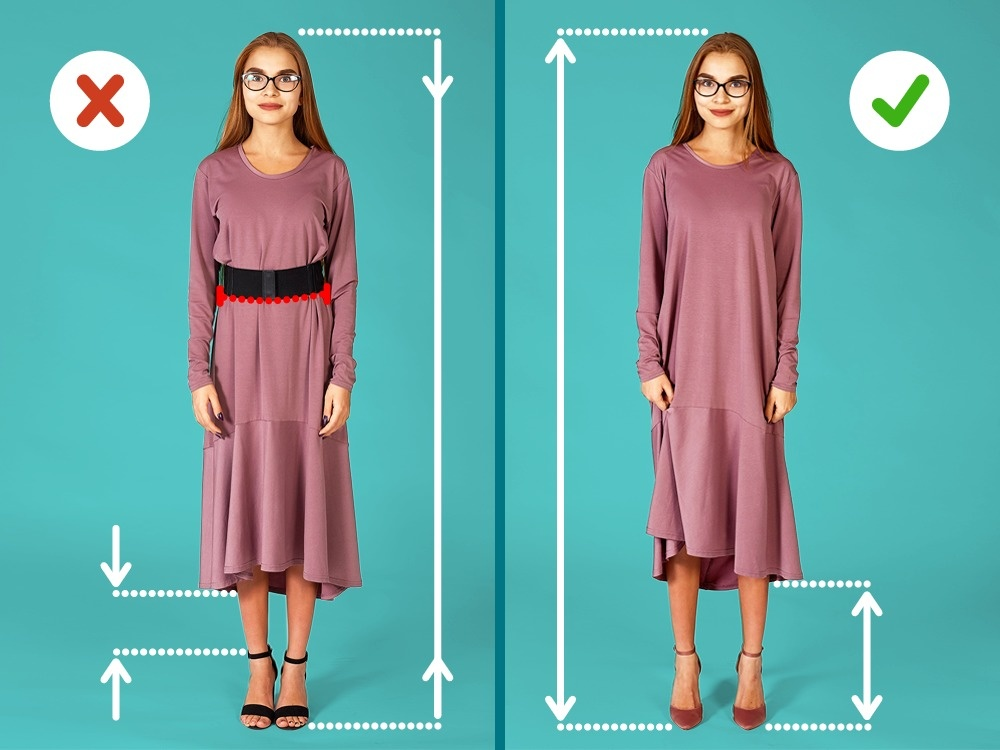
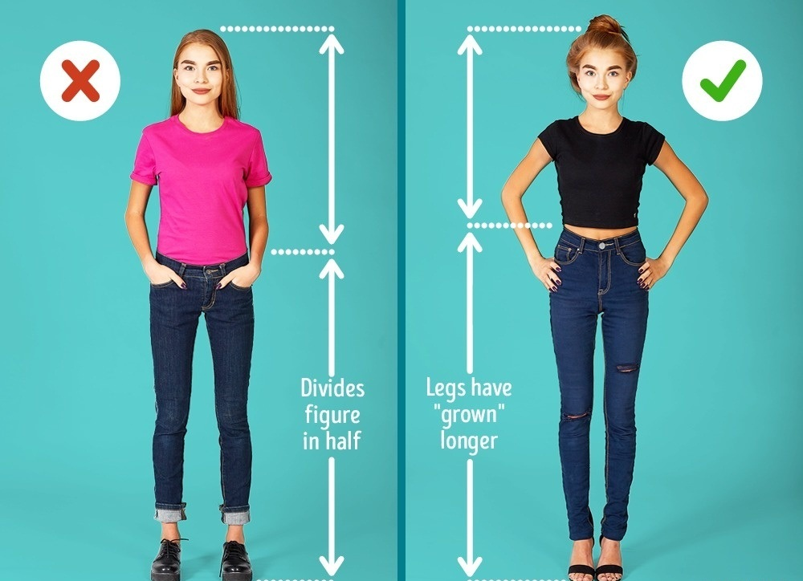
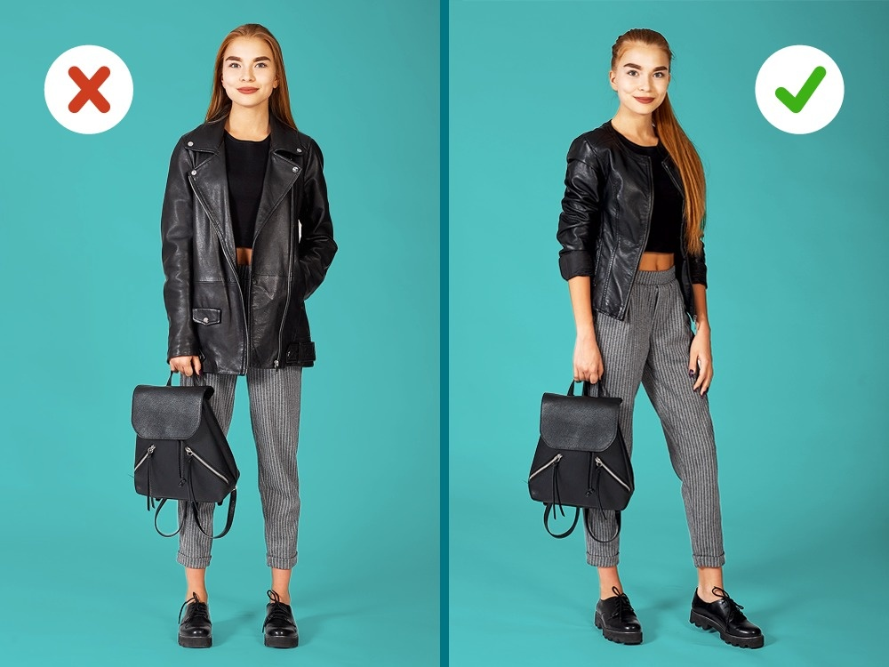
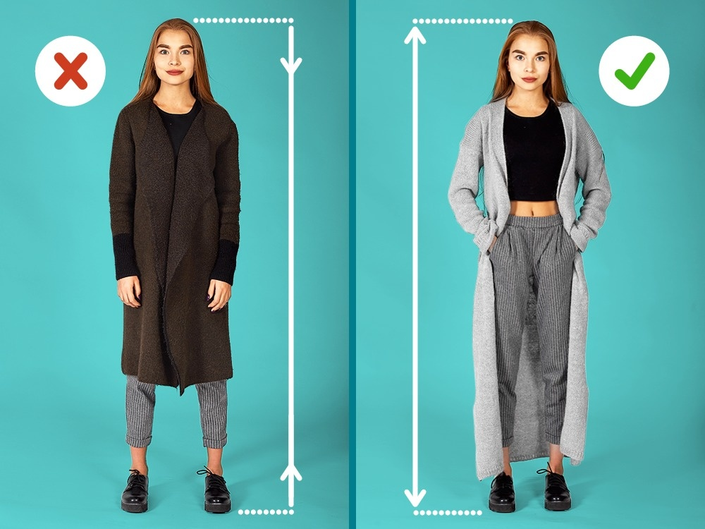
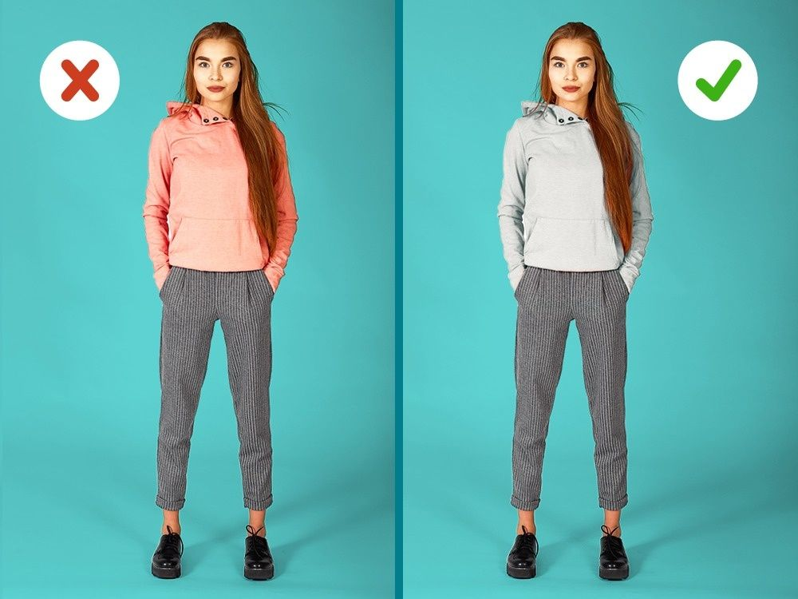
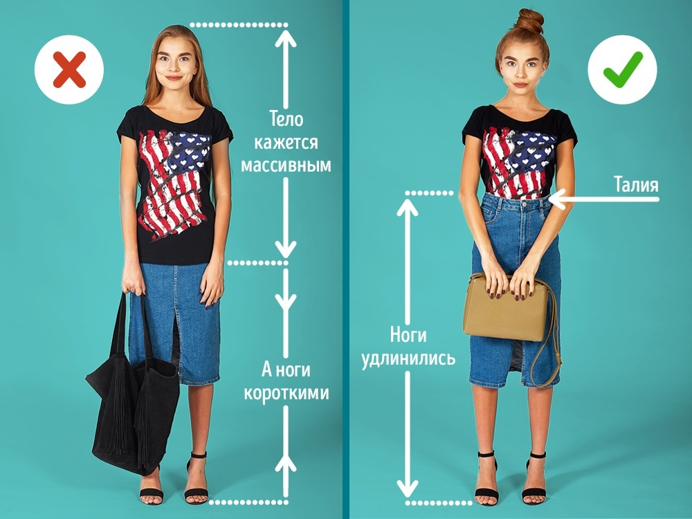

Влада рекомендует
Объемные платья более выгодно будут выглядеть на девушках высокого роста. Миниатюрных красоток большие и объемные формы как бы притягивают к земле, укорачивая фигуру и, в частности, ноги. А вот приталенные платья-футляры на них смотрятся просто отлично, поскольку позволяют выстроить правильные пропорции и «вытянуть» верх.

Если вы выбираете туфли или босоножки с застежкой на щиколотке, то лучше предпочесть обувь с ремешком в тон коже. Контрастная по цвету или массивная обувь заберет у ножек несколько сантиметров длины. Избегайте также широких ремней. На фото слева ремень создает заметную горизонтальную линию и делает тело более широким. Между тем вертикальные линии (платье без ремня, ноги в более светлых туфлях) делают нас визуально выше и стройнее.

Укороченный топ — это идеальный выбор для девушек невысокого роста. Сочетая его с джинсами с высокой талией, можно визуально удлинить ноги. Альтернативный вариант — укороченный топ с юбкой. Попробуйте, и результат вас порадует.

Невысоким девушкам не стоит носить объемные и удлиненные жакеты, пиджаки и куртки — они визуально укорачивают ноги и делают силуэт размытым и неуклюжим. Жакеты и куртки лучше выбирать небольшие по обьему, укороченные и приталенные, длиной до талии или чуть ниже. Также обратите внимание на размер сумки. Лучший выбор для миниатюрных девушек — небольшая сумка шириной не более 25–30 см. Модная сейчас сумка-шопер сделает ваш образ более громоздким. Если вы предпочитаете рюкзак, то он также должен быть небольшим и аккуратной геометрической формы.

Длинный кардиган — это удобный способ зрительно добавить себе пару сантиметров без каблуков. Кардиган успешно справляется с созданием той самой ничем не прерываемой вертикальной линии, которая зрительно увеличивает рост. Конечно, он не должен быть слишком объемным или иметь крупные детали вроде больших накладных карманов.

Контрастные цвета в одежде, например яркий верх и темный низ, будут разбивать фигуру на части и создавать выраженную горизонтальную линию границы, тем самым подчеркивая маленький рост. Монохромные же комплекты зрительно удлиняют силуэт. Кроме того, обратите внимание, что одежда ярких цветов выглядит объемнее: тот же самый свитшот, только другого цвета (слева), кажется чуть больше.

Чтобы выглядеть отлично, важно не забывать о пропорциях фигуры, которые можно задать с помощью одежды. Выпущенный наружу топ «разрежет» фигуру пополам, сделает туловище более массивным и длинным, а ноги — укоротит. Топ лучше заправить в юбку — так мы акцентируем талию, удлиним ноги и в целом сделаем фигуру более хрупкой и стройной. Еще вариант — укороченный топ с юбкой.

Все права защищены